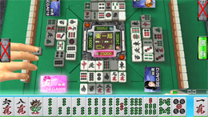
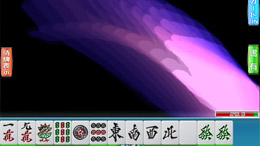
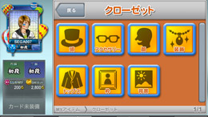
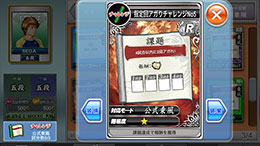
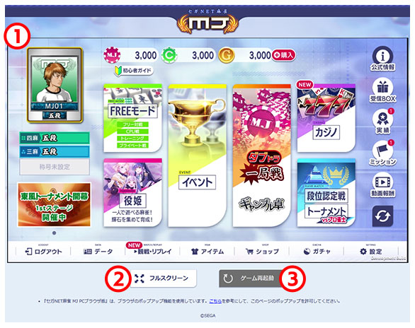

竞品参考板（优先真实对局界面）
当前重点：SEGA NET MJ 官方对局界面截图（非广告图）作为高可信锚点。
S-C Official Gameplay 001

S-C Official Gameplay 002

S-C Official Gameplay 003
S-C Official Gameplay 004

S-C Official Gameplay 005

S-C Manual Gameplay

Batch-3 强制锚点（只对齐真实对局界面）：
1. 四家围桌空间关系清晰，不退化成卡片列表。
2. 桌心公共区承载牌河与当前链路，不由侧栏主导。
3. 手牌区与动作区保持近邻，降低跳视。
4. 目标牌与可响应动作关系可直读。
5. 结果页必须先解释赢家/关系/分差，再给操作入口。